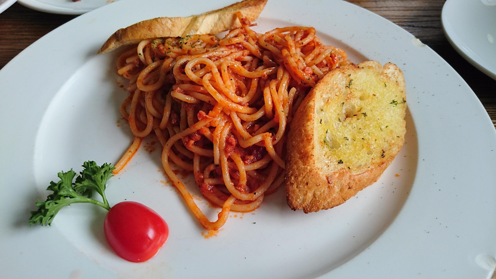

Home
Spaghetti recipe

Description
This recipe provides a classic, hearty homemade spaghetti with meat sauce that simmers on the stove top for
maximum flavor. It combines ground beef with a rich tomato sauce, aromatics, and Italian herbs.
Ingredients
- Meat: 1 lb ground beef (80/20 lean recommended)
- Produce: 1 medium yellow onion (diced), 3-4 cloves garlic (minced)
-
Sauce: 1 can (14.75 oz) beef broth, 1 can (8 oz) tomato sauce, 1 can (6 oz) tomato paste
- Seasoning: 1 tsp Italian seasoning, 2 tsp granulated sugar (to balance acidity), 1 tsp kosher salt, ½ tsp
black pepper
-
Pasta: 1 box (16 oz) spaghetti noodles
-
Optional: Parmesan cheese and fresh parsley for serving